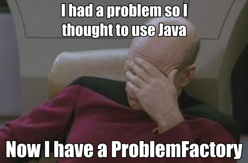
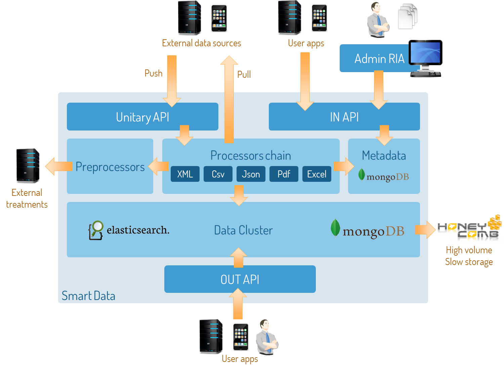
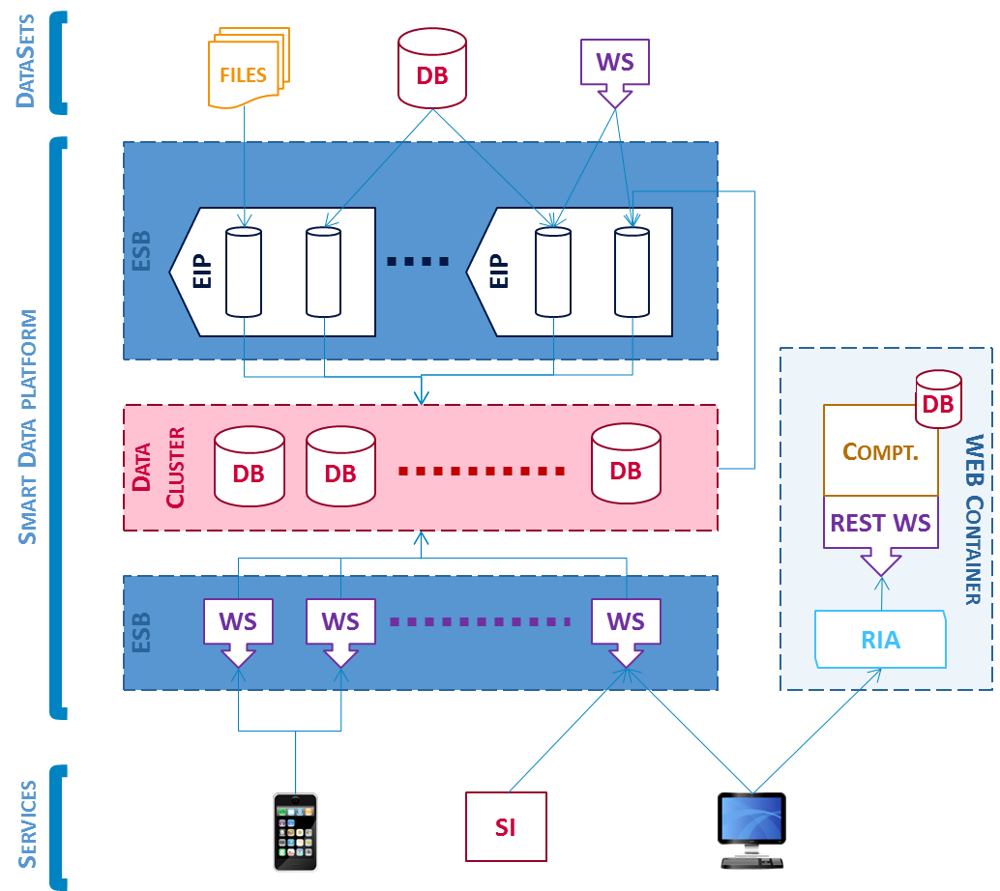
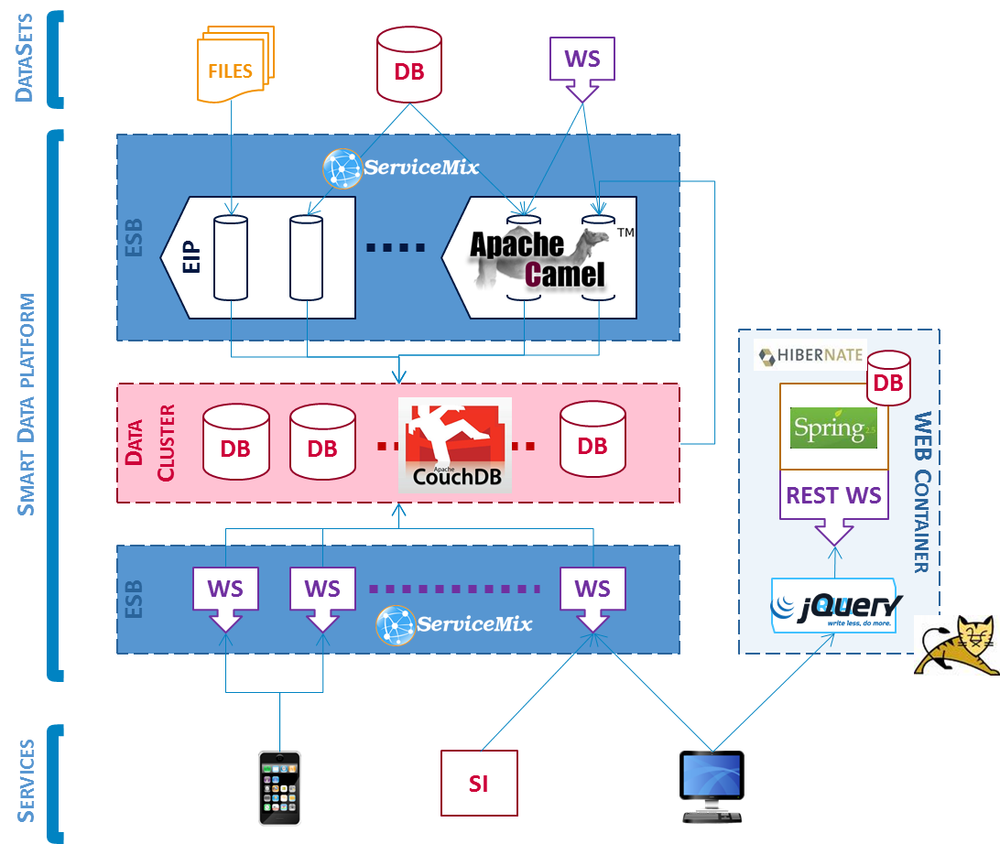
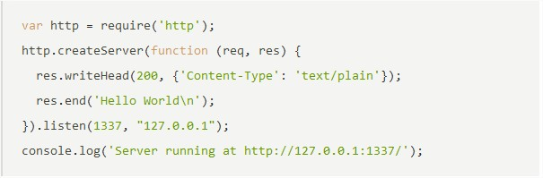

Moving forward:
Beyond
the
Object
Paradigm
Disclaimer
This is
NOT
NodeJS versus Java
the last super-fancy-coolest-ever fashion
Disclaimer
What can you expect ?
Quick tour of Smart Data
Overview of NodeJS, and related
Feedback on what worked and what failed
...fancy slides
This is about
Choosing the right tool for the right job
thank you Mr. Baldwin
Who am I?
Damien Feugas
Worldliner at Lyon since 2006
TUM (4 years)
Java Dojo Hibernate Web 2.0 GoLive! JavaScript Mail Spring AppShop Maven Orange
O&D (1 years)
Massilia Java RequireJS Hibernate Camel Data Publica JavaScript ServiceMix Spring CouchDB Maven jQuery
BSD (1 years)
NodeJS Groovy XWiki MongoDB Backbone JavaScript Smart Data ElasticSearch
What is OOP ?
Object: unit of code
Encapsulation
Class features
And it's very good for ?
Provides structure
Promotes design
Allow reuse
Almost suitable for any situation !
Caution: troll inside
Sometimes, the elegant implementation is just a function. Not a method. Not a class. Not a framework. Just a function.
John Carmack
Most software today is very much like an Egyptian pyramid with millions of bricks piled on top of each other, with no structural integrity, but just done by brute force and thousands of slaves.
Alan Kay
The problem with object-oriented languages is they've got all this implicit environment that they carry around with them. You wanted a banana but what you got was a gorilla holding the banana and the entire jungle
Joe Armstrong

Real example: Smart Data
Objectives regarding data
Collect
Process
Store
Publish
Reuse
Targeted domains
Big data
Cloud Computing
Delivered in SaaS mode
AWL investment program started on Q1 2011

So far so good
Many collaborations with other units
PHT
Low Emission Zone
eBourgone
3 commercial proposals
O&D
Connected Vehicules
Machine 2 Machine
RI
Scoring command
Customer Analysis
TUM
Orange's Storm
AtoS Group
Data Lift
BSD
BIPE Analytics
We were enthusiastic Java guys, and used all the good stuff we knew
Spring 2011


Too slow
Too complicated
Too long to test
Too rigid
Too many technologies
So we started over, from the begining
With NodeJS
Summer 2011
What is NodeJS ?
JavaScript on server side
V8 engine
C++ powered, no DOM
Low-level libs
file, net, process...
With Modularity
like imports
Asynchronous and event-based
callbacks
NIO
Single-threaded
no concurrency

NodeJS and it's gang
Node Package Manager (NPM)
package.json
central repository
script launcher
Wide range of libraries
48 Web framework
16 DB drivers
61 templating
64 protocols
100+ parsers
72 testers
Forges (Travis) and cloud platforms (Heroku Joyent NodeJitsu)
The Github playground
Almost all is public and free
Real community, real share
Sources are always accessibles
We play also our part
dozens of pullrequests
publication of some libs
var async = require('async');
async.parallel([
function(callback){
setTimeout(function(){
callback(null, 'one');
}, 200);
},
function(callback){
setTimeout(function(){
callback(null, 'two');
}, 100);
}],
function(err, results){
console.dir(results); // [‘one’, ‘two’]
}
)
execute parallel tasks and memorize order
parallelised task: for example a file access
parallelised task: for example a db update
end callback: gets results in tasks order
var http = require('http');
var proxy = http.createClient(80, 'www.google.com');
http.createServer(function(req, resp) {
var proxyReq = proxy.request(req.method,
req.url, req.headers);
req.pipe(proxyReq);
proxyReq.on('response', function (proxyResp) {
resp.writeHead(proxyResp.statusCode,
'', proxyResp.headers)
proxyResp.pipe(resp);
});
}).listen(8080);
native http server and client
executed for each incoming request
pipe data from browser to google
'response' triggered when google answers
pipe data from google to browser
But... why NodeJS ?
Smart Data is about heterogeneous data
Forget strong-typed languages, and SQL
It's a matter of simplicity
Same language on client and server side
We needed performances
V8 takes 10ms to startup and 10Mo of memory
Asynchronous suits well "many-tiny-requests" needs
Low level and fewer layers is better
Design often changes
Code need to keep simple
Code is often re-written
Does it hurts ?
Start is difficultTook me a day to understand vows
A brand new language requests some efforts to learn
We rewrote the integration chain at least 3 times
But now it really scales , and it's really fast
We had to make choices
So many libraries.... Which ones suit best our needs ?
Nobody trusts young technologies
You have to be persuasive
Does it worth it ?
Yes , honestly3000 documents per sec extracted from a CSV
A single server can handle 275 searches per sec
Compiler isn't needed
But you'll have to test everything
ninjas coders neitherWe rewrote our 3-month old Java app in 1 month
Trainees can understood the project within weeks
Developpers are happy
They enjoy writing code
They understand what they are doing
Pros
Simplicity
one language for the whole platform
Dynamic
things can evolve freely and quickly
Understandable
you can control anything even in third party libraries
Asynchronous
better use of server resources
Cons
Young
since a year, 3 Node major releases
Dynamic
no compiler. Vigilance, documentation and tests needed
Boilerplate code
too many callbacks. But CoffeeScript helps a lot
Not really OOP
don’t reproduce what you used to do
Java is really a good language
Its good to look somewhere else
Know our needs... and choose the right tool for the right job !
In conclusion